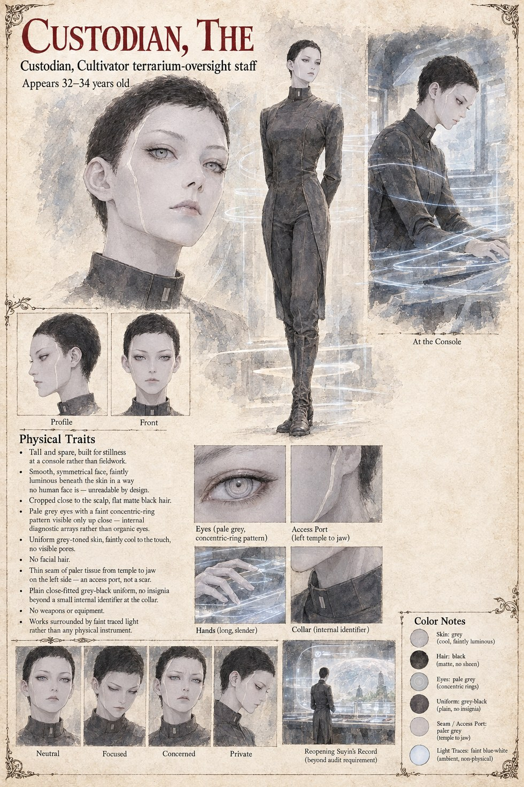

The Custodian
Cultivator Terrarium-Oversight Staff · appears 32–34
Oversight staff for the Cultivators' terrarium program — a different function entirely from a field Envoy: no disguise, no ground presence, just a console and an archive of records she is paid to audit, not to feel anything about. Suyin's individual file crosses her review four separate times after the case technically closes, well past what any audit requirement demands of her.
Her own private log gives the anomaly exactly three words, filed under a header the Corps' style guide would call adequate and complete: irregular, non-actionable, self-contained. She never escalates it, and never explains, even to herself on the page, why she kept opening a closed drawer to look at the same name.
“Irregular. Non-actionable. Self-contained.”